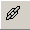

Create a Hyperlink
You can use hyperlinks in an electronic document to link to another place in the same document or to an entirely different document.
You can also create hyperlinks to other files by typing the full global address of documents (URL) and other resources on the World Wide Web in the designated area, or by typing any filename that includes a period (.).
Let's create a hyperlink by following these few basic steps:
- Type the text you want to appear as a link on the page
- Highlight the text
 - Select the button
The Insert Hyperlink window appears.
- Type the URL you would like to link to, e.g. http://www.abisource.com/, in the Select a target bookmark from the list dialog
- Select
- Hover mouse over link
- Tap a left mouse button twice in rapid succession
- Select the button
Note: You can also create a hyperlink by selecting Hyperlink from the menu.
Congratulations! You have just completed all sections in Lesson 6 and should now be able to create sub-/superscripts to format text, and create bookmarks and hyperlinks. If you'd like to go back to the beginning of Lesson 6, select Next. If you'd like to go to a different section within this lesson or to a new lesson, choose from one of the options in the Navigation bar.